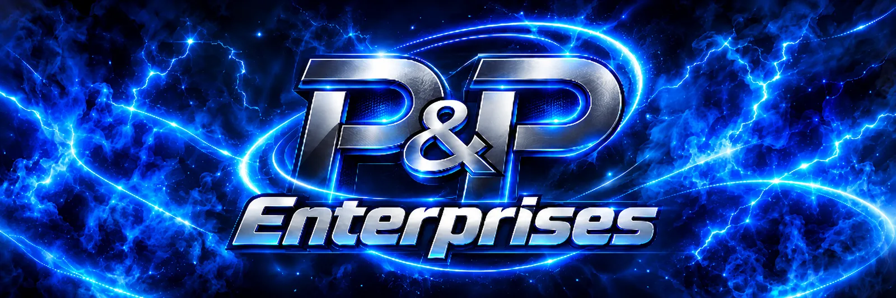
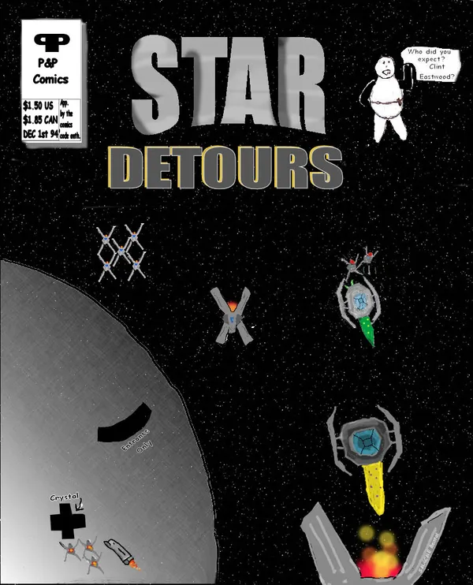

Games we made in the 90s and 2000s, back from the floppy disks.
Welcome to . . . ▄▄▄▄▄▄▄▄▄ ▄ ▄▄ ▄▄ ▄▄ ▄▄ ▄▄ ▄▄ ██ █ █ ▀▄ ▄▀ █ █ ▀▄ ▄▀ █ ▀▄▀ ██ █ █ █ █ █ █ █ █ ██ ██ INTERACTIVE ▀▀▀▀▀▀ C:\JIMMY>JIM_
